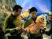

|
 |
| Ubicació >> petiso Cercar |
|
|
|
 | |
| Descàrregues: 130,
Puntuació: Descripció: Xvid. DVD+TV. Àudio dual: català - anglès. Àudio per petiso. Muntat per Nava |  |
| Categoria: Arrel>> Pel·lícules>> Crim | |
 Gangs of New York
Gangs of New York
| Descàrregues: 156,
Puntuació: Descripció: DVDrip + audio anglès (properament subs by petiso) | |
| Categoria: Arrel>> Sèries>> Parelles>> 1a Temporada | |
| Descàrregues: 80,
Puntuació: Descripció: Xvid. DVD+TDT. Àudio dual: català - anglès. Àudio per petiso, Xordi i Celdelnord. Muntat per Nava |  |
| Categoria: Arrel>> Sèries>> Star Trek: TOS>> 1a Temporada | |
| Descàrregues: 153,
Puntuació: Descripció: Xvid. DVD+TDT. Àudio dual: català - anglès. Produït per Panotxa. Àudio per petiso. Muntat per Nava |  |
| Categoria: Arrel>> Sèries>> El nan roig [remasteritzat]>> 2a Temporada | |
| Descàrregues: 172,
Puntuació: Descripció: Xvid. DVD+TDT. Àudio dual: català - anglès. Produït per Panotxa. Àudio per petiso. Muntat per Nava |  |
| Categoria: Arrel>> Sèries>> El nan roig [remasteritzat]>> 2a Temporada | |
| Descàrregues: 193,
Puntuació: Descripció: Xvid. DVD+TDT. Àudio dual: català - anglès. Produït per Panotxa. Àudio per petiso. Muntat per Nava |  |
| Categoria: Arrel>> Sèries>> El nan roig [remasteritzat]>> 1a temporada | |
| Descàrregues: 226,
Puntuació: Descripció: Xvid. DVD+TDT. Àudio dual: català - anglès. Àudio per petiso, Pizarrín, Celdelnord i Teucre. Muntat per Nava |  |
| Categoria: Arrel>> Sèries>> Star Trek: TOS>> 1a Temporada | |
| Descàrregues: 220,
Puntuació: Descripció: Xvid. DVD+TDT. Àudio dual: català - anglès. Àudio per petiso i Pizarrín. Muntat per Nava |  |
| Categoria: Arrel>> Sèries>> Star Trek: TOS>> 1a Temporada | |
| Descàrregues: 214,
Puntuació: Descripció: Xvid. DVD+TDT. Àudio dual: català - anglès. Produït per Panotxa. Àudio per petiso. Muntat per Nava |  |
| Categoria: Arrel>> Sèries>> El nan roig [remasteritzat]>> 1a temporada | |
| Descàrregues: 125,
Puntuació: Descripció: Xvid català. DVD+TDT. Àudio dual: català - anglès. Àudio per petiso i Pizarrín. Muntat per Nava |  |
| Categoria: Arrel>> Sèries>> Star Trek: TOS>> 1a Temporada | |
|